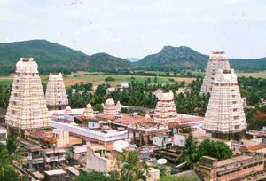

 Ramanathaswamy Temple is a Hindu temple dedicated to the god Shiva located on Rameswaram island in the state of Tamil Nadu, India. It is also one of the twelve Jyotirlinga temples. It is one of the 274 Paadal Petra Sthalams, where the three of the most revered Nayanars (Saivite saints), Appar, Sundarar and Tirugnana Sambandar, have glorified the temple with their songs. The temple was expanded during the 12th century by Pandya Dynasty, and its principal shrines sanctum were renovated by Jeyaveera Cinkaiariyan and his successor Gunaveera Cinkaiariyan of the Jaffna kingdom. The temple has the longest corridor among all Hindu temples in India. The temple is located in Rameswaram considered a holy pilgrimage site for Shaivites, Vaishnavites and Smarthas. The presiding deity, the Lingam of Ramanathaswamy (Shiva), was established and worshiped by Rama before crossing his bridge to Lanka.
According to the Ramayana, Rama, which is the seventh avatar of the god Vishnu, prayed to the god Shiva to absolve him of the sin committed during his war against the king Ravana in Sri Lanka. Rama wanted to have a large lingam to worship Shiva. He directed Hanuman, the lieutenant in his army, to bring a lingam from the Himalayas. When Hanuman was delayed in bringing the lingam, rama built a small lingam out of the sand available in the seashore, which is believed to be the lingam in the sanctum.
'Ramanathaswamy' literally means 'the Master of Rama' which refers to Lord Shiva, which the temple is all about. There
are two 'lingam' inside the temple; 'Ramalingam' by Devi Sita built by sand and 'Viswalingam' brought by Lord Hanuman
from Kailasha (abode of Lord Shiva) and installed by Lord Rama. Temple tanks, hall of 1000 pillars, and several other
shrines in the temple attract millions of pilgrims every year, especially during Maha Shivratri.